TVV RESEARCH SLATE — October 27, 2026 — 12 desks
1. Major Geopolitical Conflict Developments
- ★ Israel votes: turnout reached 31.5% by noon, more than 2.3 million voters, the highest at that hour since 1977, according to the Central Elections Committee. Polls close at 22:00 local (4 p.m. ET) with broadcaster exit polls; many soldiers' votes will not be counted until Wednesday, and final results are due by Nov 4. Haaretz live · New York Times live · BBC · AP live
- Election-day friction in Israel: several leading parties alleged irregularities at polling stations, while the Central Election Committee said there is no evidence of systematic tampering with ballot slips. A man was arrested after approaching Democrats leader Yair Golan with a knife, the party said. BBC · Haaretz live
- ★ Ukraine: Russia launched 16 ballistic missiles and more than 280 drones overnight, mainly at Kyiv, Zelensky said; the Air Force reports two ballistic missiles and 255 drones downed and impacts at 25 locations. In Kyiv at least one person was killed and 15 injured; the Southern (Pivdennyi) Bridge was hit, disrupting metro services, along with a university campus and medical facilities. Nationwide, attacks killed at least four and injured at least 55 over the past day. Zelensky blamed delays in Patriot and NASAMS interceptor deliveries. Ukrinform · Kyiv Post · Kyiv Independent · Hromadske
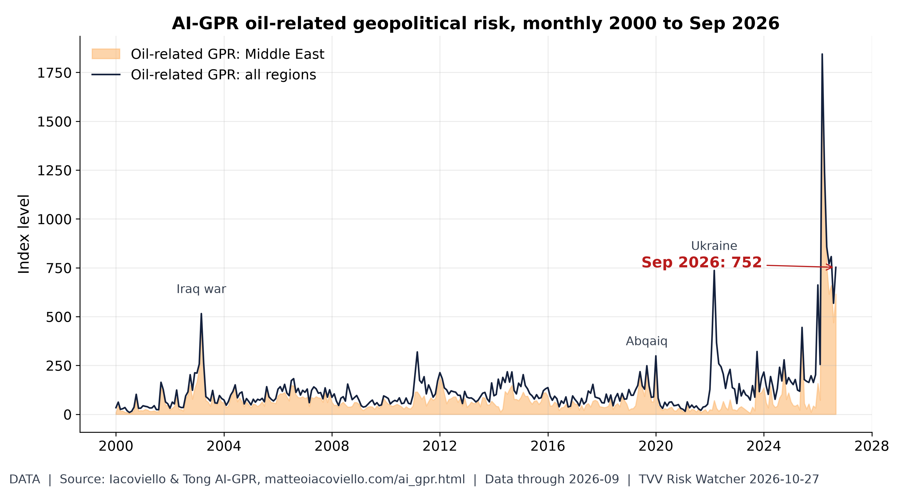
Oil geopolitical risk: off the March peak, still high. Iacoviello's oil-related AI-GPR read 752 in September, below the March 2026 record of 1,844 but above the 2003 Iraq-war (515) and 2022 Ukraine (736) readings. [Data; data as of 2026-09 (held: monthly, next update early Nov)] Source: matteoiacoviello.com data page
- Oleshky truce update: the strikes on Kyiv came hours before the local truce in Russian-occupied Oleshky (Kherson region) began; the truce is meant to allow aid deliveries, demining and civilian evacuation. The Guardian
- ★ Iran diplomacy: after Monday's Tehran meetings, Iran, Saudi Arabia, Turkey and Pakistan agreed to keep talking on regional peace and security, but announced no deal or next meeting date. Trump told Fox News on Sunday he was approaching a decision on whether to strike a deal with Iran or intensify military operations. Al Jazeera · CNBC
- ★ Hormuz (conflicting claims): Iran's armed forces chief, Maj. Gen. Abdollahi, said the strait is "completely closed" and no violating vessel will be safe, rejecting US claims that it is open; Iran's Persian Gulf Strait Authority said it would take "legal action" against tankers of South Korea's Sinokor and said it has already taken enforcement action against at least seven. UKMTO separately disclosed late a tanker disabled by an unknown projectile in the strait on Oct 23 (crew safe), and reported a vessel on fire about 60-63 nm southeast of Al-Faw, Iraq (classed as suspicious activity, cause unknown). US officials say the strait is open; the two sides' accounts conflict. Mehr News (Iranian state) · Bloomberg · TradeWinds · World Ports Organization · World Ports Organization (Al-Faw)
- ★ Saudi-Houthi war update: the Saudi-led coalition said it intercepted three Houthi ballistic missiles aimed at the Eastern Region and four drones aimed at the south on Tuesday, after downing three drones over Riyadh and southern Saudi Arabia Monday evening; civil defense alerts in the Eastern Region and Al Kharj were lifted and no casualties were reported. Al Jazeera · Gulf News
- ★ Brazil update: Flávio Bolsonaro dropped his demand to annul Lula's win after his Liberal Party formally accepted the result, and said he will lead the opposition; he is pursuing a separate, unlikely bid to disqualify Lula's ticket over alleged misuse of public funds and vote buying. Trump had suggested the vote was rigged. Straits Times · El País · Al Jazeera
- YouTube pick (Oct 26): Fox News Clips, on a possibly long midterm election night. Fox News Clips video
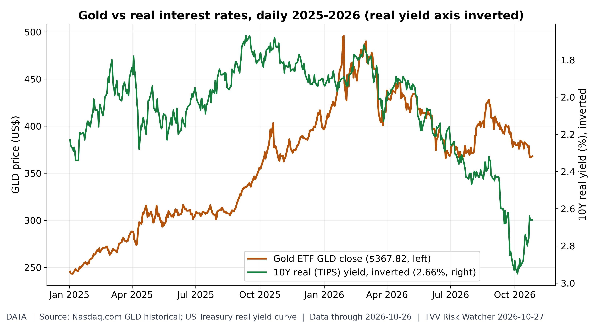
Gold vs real rates. GLD closed at $367.82 on Oct 26, 25.8% below its Jan 29, 2026 high of $495.90; the 10Y real yield is 2.66%. 2026 daily correlation of GLD returns with real-yield changes: -0.26. [Data; data as of 2026-10-26 (GLD close, Nasdaq.com; real yield Treasury)] Source: nasdaq.com data page
2. Major Terror / Security Incidents
- ★ Jordan retaliates in Syria: Jordan carried out air strikes in southern Syria on Monday against groups it tied to the Karak church attack that killed nine; it later said more than 20 ISIS militants were killed and acknowledged civilian deaths. Syrian authorities reported seven civilians killed, including three children, said Jordan had not notified them, and closed the Nassib border crossing. AP · Al Jazeera · The National
- ★ Cyber, US hospitals: a cybersecurity event at the University of New Mexico Health System on Monday forced ambulance diversions from UNM Hospital and Sandoval Regional Medical Center and cancelled appointments, outpatient surgeries and classes. Systems came back in phases; hospitals were open by late Monday and clinics were to resume Tuesday. A ransomware group calling itself BYOD claimed data theft, which UNM has not confirmed. UNM HSC Newsroom · AP
- Cyber, Japan: GMO Internet confirmed unauthorized access to its Onamae.com Desktop Cloud service and says it will not pay the attackers' ransom; it will compensate affected users after stolen credentials were used for unauthorized trades. GMO Internet (seventh report) · Euronews
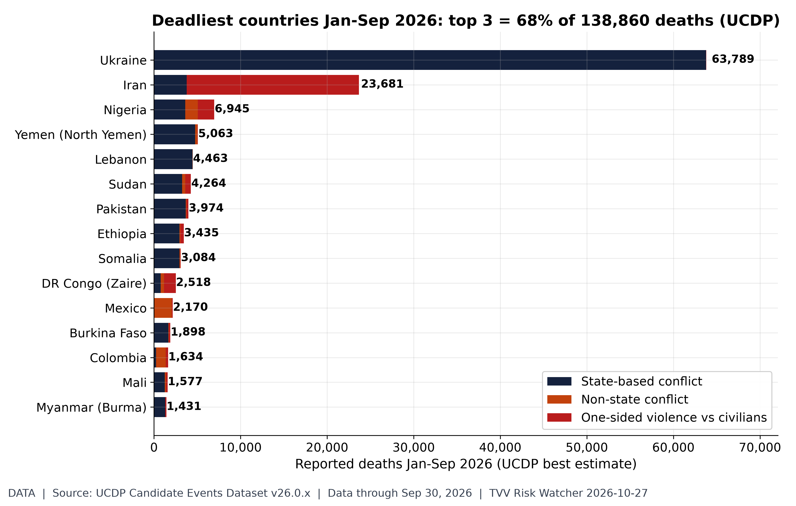
The deadliest conflict zones of 2026. UCDP candidate events Jan-Sep 2026: 138,860 deaths worldwide; Ukraine 63,789, Iran 23,681, Nigeria 6,945, Yemen (North Yemen) 5,063, Lebanon 4,463. Largest one-sided (civilian-targeted) toll: Iran 19,901. UCDP codes organized violence (state, non-state, one-sided), which includes but is not limited to terrorism; candidate data are preliminary and revised monthly. [Data; data as of Sep 30, 2026 (candidate GED v26.0.9, merged with v26.0.1-6/0.7/0.8)] Source: ucdp.uu.se data page
3. Earthquakes and Eruptions
- No new M6+ quake with significant casualties or damage since Oct 22. USGS lists no M6+ event on Oct 26-27; the largest were M5.8 near Vanuatu (Oct 27) with no damage reported. USGS latest earthquakes
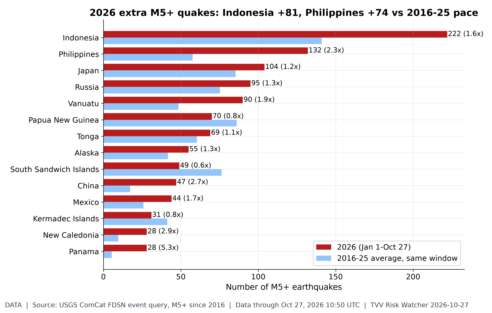
Which regions are shaking more?. USGS ComCat M5+ through 10:50 UTC Oct 27: 1,681 in 2026 vs a 2016-25 average of 1,418 for the same Jan 1-Oct 27 window. Busiest: Indonesia 222 (avg 141.0), Philippines 132 (avg 57.6), Japan 104 (avg 85.3), Russia 95 (avg 75.2). Biggest excess vs normal (regions averaging 5+): Panama 5.3x, New Caledonia 2.9x, China 2.7x. Regions are USGS place-name tails (country or named region), so offshore zones may split. [Data; data as of Oct 27, 2026 10:50 UTC] Source: earthquake.usgs.gov data page
4. Solar / Space Weather
- ★ Magnetic field watch (measured): NOAA's World Magnetic Model tracks the north magnetic pole's drift from the Canadian Arctic toward Siberia ; this measured drift is the background to geomagnetic-excursion risk; no one can predict the timing of an excursion. Michael Hentschel's own view: 2035 at the earliest, with critical earth changes along the way. NOAA NCEI wandering poles · NOAA World Magnetic Model
- Space weather quiet: NOAA SWPC's Oct 27 forecast shows a past-24-hour maximum Kp of 2 and expects a peak Kp of 2.33 through Oct 29, with no G1 storm expected. NOAA SWPC 3-day forecast
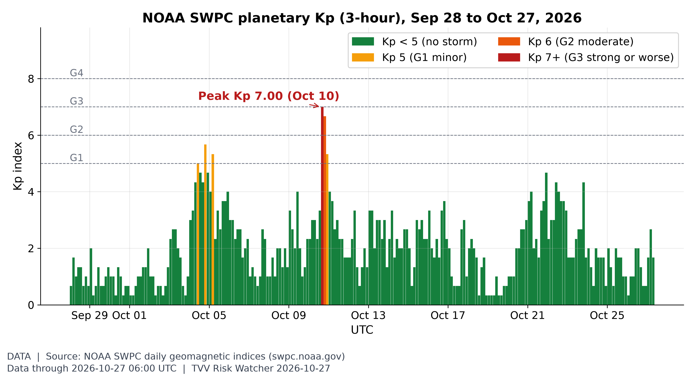
Geomagnetic activity, last 30 days. Kp peaked at 7.00 on Oct 10 in this 30-day window; since Oct 26 00 UTC it maxed at Kp 2.67, and NOAA's latest 3-day forecast (issued 2026 Oct 27 0030 UTC) has a peak Kp 2.33 on Oct 27. [Data; data as of 2026-10-27 06:00 UTC (partial day; forecast issued 2026 Oct 27 0030 UTC)] Source: swpc.noaa.gov data page
5. Critical Infrastructure / Transportation Disruptions
- ★ Kyiv logistics hit: the overnight strike damaged metro infrastructure on Kyiv's Southern (Pivdennyi) Bridge, a main Dnipro crossing, which Zelensky called a serious escalation of Russia's campaign against logistics; he said energy, logistics and urban infrastructure were targeted almost everywhere. Ukrinform · Kyiv Independent
- ★ Gulf shipping risk spreads: the vessel fire reported southeast of Al-Faw in Iraq's waters is, by one security consultant's count (Obsidian Risk Advisors), the 10th suspected Iranian strike on a ship this month inside the Gulf, well beyond the strait. The cause of the Al-Faw fire is unconfirmed. World Ports Organization · World Ports Organization
- ★ UK grid storm update: after Storms Austen and Boelo, network operators had reconnected 785,000 customers in Great Britain by 8 a.m. Monday with 39,000 still off supply; Northern Powergrid said 138,000 of its customers were hit by Boelo, and SSEN still had about 22,000 customers off. Network Rail's North West route logged 357 weather-related faults. New Civil Engineer
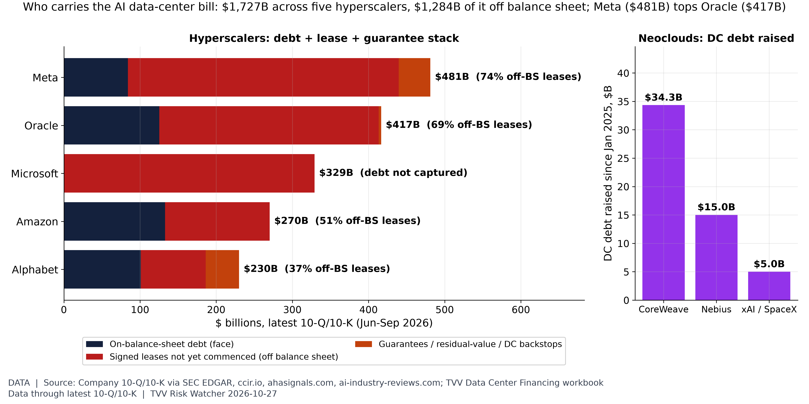
Who carries the AI data-center liabilities. Debt plus signed-but-not-commenced leases plus guarantees, latest filings: Meta $481B (debt $84B, leases $356B, residual-value guarantees up to $41.5B), Oracle $417B (debt $125B, leases $288B, lessor guarantee $3.3B), Amazon $270B, Alphabet $230B (incl. $43.8B of neocloud DC backstops), Microsoft $329B of leases (debt not captured in TVV file). Off-balance-sheet items are $1,284B of $1,727B. Meta's $454B purchase commitments are excluded. Neocloud DC debt since Jan 2025: CoreWeave $34.3B, Nebius $15.0B, xAI $5.0B. Microsoft and Alphabet report Oct 28, Amazon Oct 29 (Meta reported Oct 21). [Data; data as of latest 10-Q/10-K (Jun-Sep 2026); TVV workbook compiled Oct 25] Source: sec.gov data page
6. Econo-Metrics
- ★ Fed meeting begins: the FOMC starts its two-day meeting today ahead of Wednesday's decision; markets price at least two more hikes by mid-2027 (Reuters), and CME FedWatch shows 81% odds of a quarter-point December hike (Barron's). BNY's John Velis says the Fed would not be wrong to hike, as the inflation target has been exceeded for over 60 straight months. PCE inflation is due Thursday. Reuters via Investing.com · Barron's
- ★ Oil seesaw: Brent December futures were up 0.22% at $116.07 and WTI up 0.52% at $102.29 at 6:23 a.m. ET, reversing earlier losses on the Tehran talks as Houthi attacks on Saudi Arabia continued. The 10-year Treasury yield was near 4.99% and the dollar index up 0.2% at 101.96. CNBC · Hong Leong Bank market watch
- ★ Real rates near zero before the Fed: the effective fed funds rate is 3.88% (Oct 23) against September CPI of 3.7% year on year, a real policy rate of about +0.01 pp (core-based +1.18 pp, core CPI 2.6%); a year earlier it was +1.21 pp. FRED DFF · FRED CPI
- YouTube picks: Blackstone President Jon Gray on compute scarcity (Oct 25); Bloomberg on what to watch in Big Tech earnings (Oct 25). Blackstone video · Bloomberg video
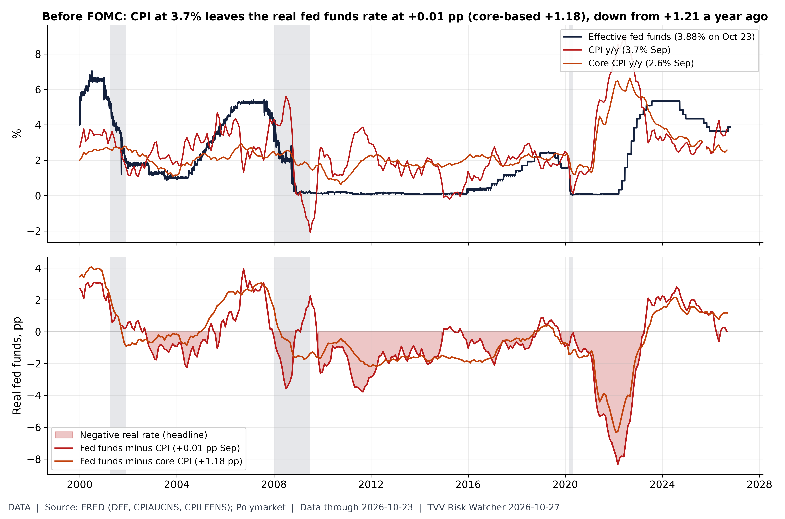
How tight is the Fed, really?. Effective fed funds 3.88% (Oct 23) vs CPI 3.7% y/y in September: the real rate on headline CPI is +0.01 pp (core-based +1.18 pp, core 2.6%). A year ago (Sep 2025) it was +1.21 pp. Polymarket prices a December 25bp HIKE at 75.5% (no change 21.0%) ahead of the Oct 28 decision. Monthly average fed funds minus y/y CPI (not seasonally adjusted). [Data; data as of 2026-10-23 (fed funds); CPI 2026-09] Source: fred.stlouisfed.org data page
7. Epidemic / Bio-Metrics
- ★ Ebola (Bundibugyo) in DR Congo: the latest DRC report shows 10,060 confirmed cases and 4,887 deaths (SitRep 164), up from 9,964 and 4,841 in SitRep 163; deaths are 48.6% of confirmed cases and the 7-day average is 72.6 new cases a day, down from a peak of 129.4 in late July. A nurse was killed outside an Ebola clinic in Tshopo province, and a three-way vaccine trial has started in Bunia. INSP SitRep 164 (ebola-tracker.org) · CIDRAP
- ★ Ebola outside Congo update: Kenya reported its second Bundibugyo death, a 65-year-old relative of the index patient; Kenya has nine confirmed cases, all linked to that patient, and no new cases. Nigeria's only confirmed patient was evacuated to Switzerland on Oct 26 in stable condition, with 52 contacts monitored; Africa CDC is investigating whether both index patients were infected at Entebbe airport on Oct 3. CIDRAP · ECDC
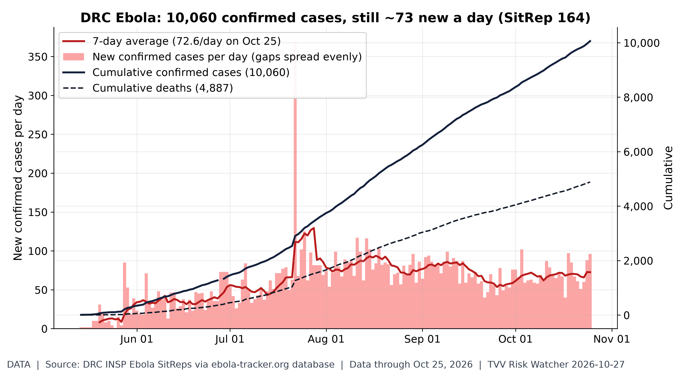
Ebola outbreak not slowing. INSP SitRep 164 (situation Oct 25): 10,060 confirmed cases and 4,887 deaths (48.6% of confirmed cases) since the first bulletin May 14; 7-day average 72.6 new cases/day (peak 129.4 around Jul 28). Top provinces: Ituri 7,211, Nord-Kivu 2,309, Haut-Uélé 436. Daily values where bulletins skip days are spread evenly; data are as transcribed by ebola-tracker.org from INSP PDFs. [Data; data as of Oct 25, 2026 (SitRep 164, published next day)] Source: ebola-tracker.org data page
8. Gold and Silver
- ★ Gold holds $4,000: gold-api.com spot was $4,012 and silver $53.54 at 07:08 ET Tuesday, a gold-silver ratio of about 75 (other silver quotes ranged from $52.98 to $54.12); GLD closed Monday at $367.82, 25.8% below its Jan 29 high, with the 10-year real yield at 2.66% ahead of the Fed. gold-api.com gold · gold-api.com silver
- ★ Copper near records: the COMEX-basis spot quote was $6.61/lb (about $14,566/t) on Oct 27, above September's World Bank monthly average of $14,474/t, itself a 2010-26 monthly record. World Bank Pink Sheet
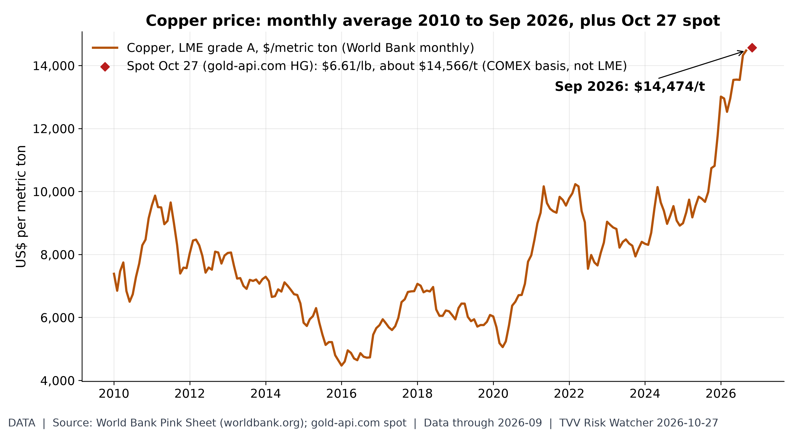
Copper near the top of its range. Copper averaged $14,474/t in September (a 2010-26 monthly record); the Oct 27 COMEX-basis spot quote is $6.61/lb (about $14,566/t). [Data; data as of 2026-09 (World Bank monthly, held); 2026-10-27 07:08 ET (gold-api.com HG spot)] Source: worldbank.org data page
9. Stock Averages and Nasdaq Major Movers
- ★ Monday close (Oct 26): the Dow rose 0.28% to 52,361.58, the S&P 500 0.70% to 7,676.77 and the Nasdaq 0.82% to 26,169.38, as chip stocks rallied after Anthropic's IPO filing. Technology (XLK) gained 1.69% and the oil fund USO fell 1.95%; QQQ rose 1.11%. CNBC · Sharecast
- ★ Tuesday premarket: around 7:40 a.m. ET S&P 500 futures were up about 0.3%, Dow futures 0.3% and Nasdaq-100 futures 0.5%. UPS rose more than 1% on results, JetBlue jumped over 11%, Whirlpool fell 7% on a surprise loss, Broadcom gained more than 2% and Coca-Cola rose after raising its forecast. Japan's Nikkei rose 1.73% to 63,268; Korean chip stocks led a Kospi rebound. CNBC live · Markets Insider premarket · Yahoo Finance
- ★ Breadth and tail risk: small caps have regained 6.1% against the Nasdaq-100 since the Oct 7 low (IWM/QQQ ratio 97.1, Dec 31 = 100; QQQ +15.9% YTD vs IWM +12.5%). The Cboe SKEW closed Monday at 151.0 (2026 range 126.4-168.6) and VVIX at 101.4 (2026 high 140.4 on Mar 6). Microsoft and Alphabet report Wednesday after the close, Amazon Thursday. Nasdaq data · Cboe SKEW
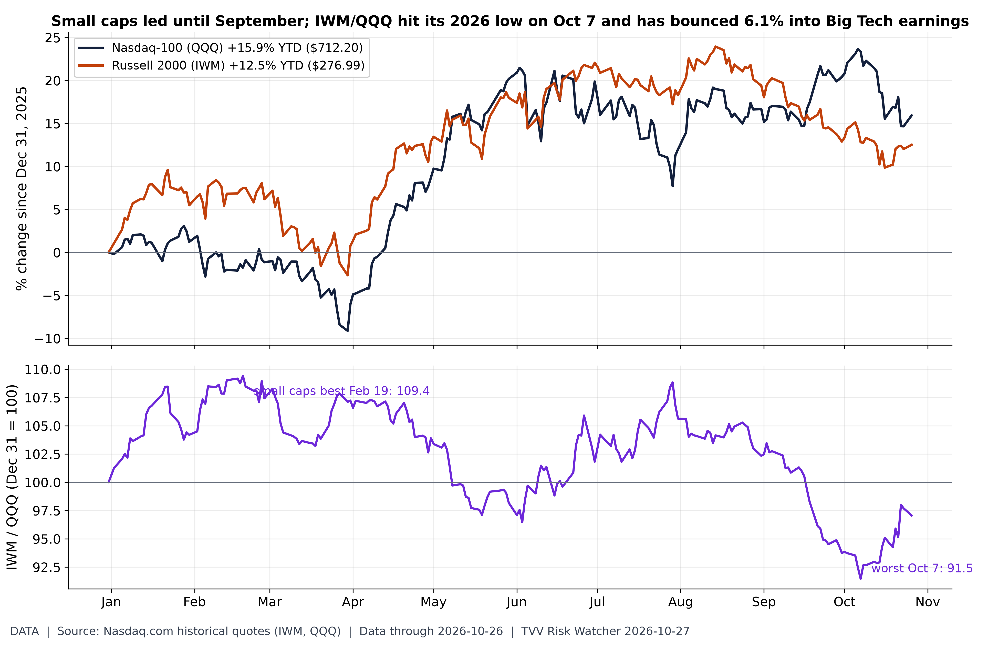
Is the rally broadening before earnings?. Closes Mon Oct 26: QQQ $712.20 (+15.9% YTD) vs IWM $276.99 (+12.5%). The IWM/QQQ ratio is 97.1 (Dec 31 = 100), +2.3% over the last 20 sessions; its 2026 high was 109.4 on Feb 19 and its low 91.5 on Oct 7, so small caps have regained 6.1% relative to Nasdaq-100 since. A rising ratio means breadth beyond megacaps; Microsoft and Alphabet report Oct 28, Amazon Oct 29, Apple Nov 2 (Meta reported Oct 21). [Data; data as of 2026-10-26 (Mon close)] Source: nasdaq.com data page
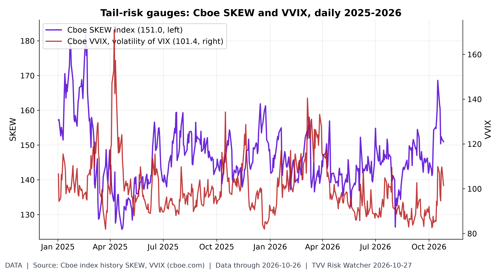
Is anyone paying for crash protection?. On Oct 26 SKEW closed at 151.0 (2026 range 126.4-168.6) and VVIX at 101.4 (2026 high 140.4 on Mar 6). Higher SKEW = costlier far-out-of-the-money S&P puts. [Data; data as of 2026-10-26 (Cboe index history, Mon Oct 26 close)] Source: cboe.com data page
TECHVESTVENTURES ACTION-ALERT — October 27, 2026
EDITOR — Michael Hentschel
Most news events require or spawn no action or reaction, some (but not many) are or become warnings. We draw attention to substantial lifestyle risks and market risks in particular, some created by Mid-Term Vote anxieties, Middle East tensions, vast over-indebtedness globally, and other events we track. Longer term but capable of causing sudden power surges as serious as the Carrington Event. Climate instability occasioned by long-term cyclical solar electro-magnetic flares, is becoming much more prominent and even more likely. New AI predictive analytics and pattern seekers are pointed in some of these directions, and we monitor imminent likelihood. Some readers might hedge and others might see opportunity. The above is not investment advice.
10. Polymarket and Kalshi Sentiment Highlights
- ★ Israel election day (Polymarket, ~7:10 a.m. ET): Yashar 69.5% to win the most Knesset seats vs Likud 29.5% (38.5% on Sep 27). Likud under 25 seats is priced at about 75%; Netanyahu's bloc outscoring the opposition 40%; either bloc reaching 61 seats only 11%. Polymarket Israel election · Polymarket bloc odds
- ★ Rate divergence (Polymarket, ~7:10 a.m. ET): a Fed hike in December is priced at 78.2%, up from 71.5% on Sep 27, while a BoJ hike at its Oct 29-30 meeting has fallen to 2.2% from 21.2%. The yen traded near 157.7 per dollar Tuesday morning. Polymarket Fed December · Polymarket BoJ October
- Recession odds: Polymarket prices a 7.5% chance of a US recession by the end of 2026. Polymarket US recession 2026
- YouTube pick (Oct 26): Fox News Clips on the tightest 2026 Senate races. Fox News Clips video
Israel election day in the markets. Polymarket at ~7:10 AM ET Oct 27 (election day): Yashar 69.5% to win the most Knesset seats vs Likud 29.5% (Likud was 38.5% on Sep 27); Likud seats: <20 34.3%, 20-24 41.0%, 25-29 17.0%, 30-34 5.7%, 35+ 1.1%. Netanyahu bloc outscores the opposition bloc: 40%; either bloc at 61+: 11%. Marke
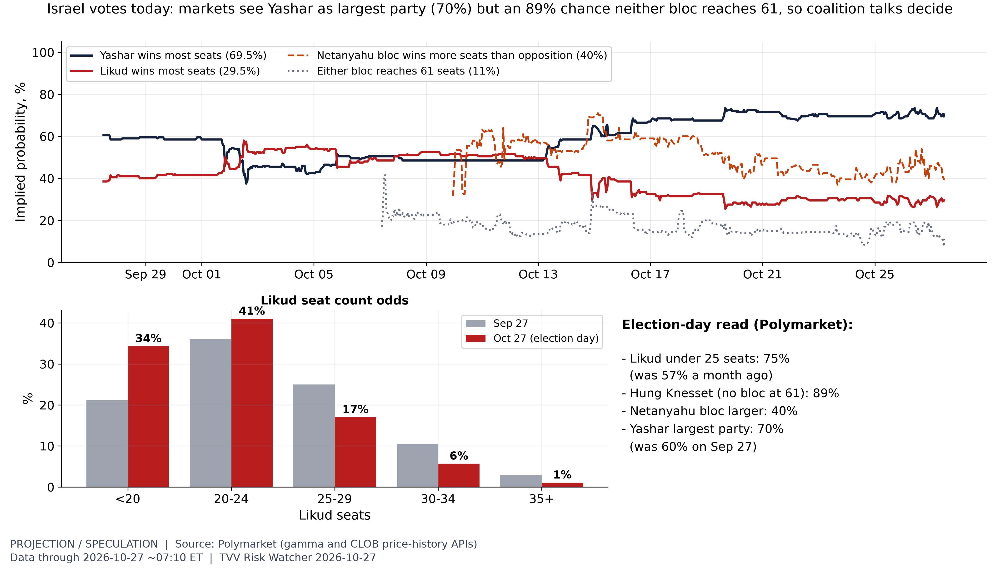
todds are crowd prices, not polls or results; thin markets can move fast as counts arrive. (Separate from the resting Israel PM market.) [Projection; data as of 2026-10-27 ~07:10 ET (hourly price history from Sep 27)] Source: polymarket.com data page
11. Tech-Metrics
- ★ Anthropic files for IPO: Anthropic's S-1 for a Nasdaq listing shows first-half 2026 revenue of $16.28 billion (up about 1,300%), about 80% of it from consumption-based enterprise customers, Q2 operating income of $974 million and $112.4 billion of cash. Semafor highlights founder control, Trump-administration risk and large losses among the filing's risk factors. SEC S-1 · Anthropic · Fortune · Semafor
- ★ Meta's record equity raise: Meta expanded its stock sale to $97.5 billion to fund AI expansion, $35 billion of underwritten common and mandatory convertible preferred plus a planned $60 billion at-the-market program; Nvidia, AMD and Broadcom indicated interest in up to $5 billion of shares, and Nvidia said it will invest $3 billion. Meta investor release · Euronext / Reuters · CNBC
- ★ Earnings test: Big Tech trades well off its highs into results (Monday closes vs 52-week highs): Alphabet -21.3%, Meta -18.9%, Amazon -12.3%, Nvidia -9.7%, Microsoft -2.0%, Nasdaq-100 -6.2%. Jefferies sees Magnificent 7 earnings growing 21% vs 32% for the rest of the S&P 500. Nasdaq data · Reuters via Investing.com
- YouTube picks: CNBC, China wants in on the US AI data-center boom (Oct 26); Vox on the AI build-out (Oct 26). CNBC video · Vox video
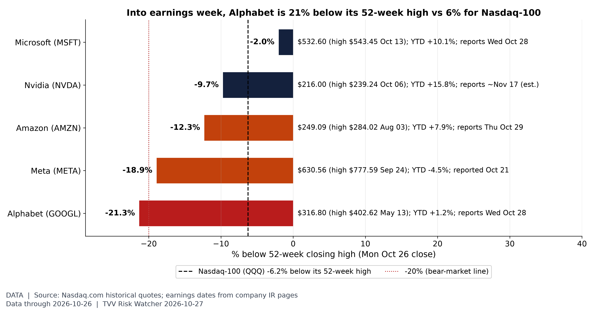
Big Tech going into earnings. Closes Mon Oct 26 vs 52-week closing highs: Alphabet -21.3% ($316.80 vs $402.62 on May 13, YTD +1.2%); Meta -18.9% ($630.56 vs $777.59 on Sep 24, YTD -4.5%); Amazon -12.3% ($249.09 vs $284.02 on Aug 3, YTD +7.9%); Nvidia -9.7% ($216.00 vs $239.24 on Oct 6, YTD +15.8%); Microsoft -2.0% ($532.60 vs $543.45 on Oct 13, YTD +10.1%); Nasdaq-100 -6.2%. Microsoft and Alphabet report Wed Oct 28 after the close, the same day as the FOMC decision; Amazon Thu Oct 29; Meta reported Oct 21; Apple Nov 2. [Data; data as of 2026-10-26 (Mon close)] Source: nasdaq.com data page
12. AI Hypergrowth Risks
- ★ Compute-commitment mismatch: Anthropic's S-1 shows at least $475 billion of future cloud-compute purchase commitments, rising to as much as $750 billion with chip leases (Fortune's count), while most revenue is consumption-based and customers can walk at any time. Remaining performance obligations are only $10.8 billion, 75% of it recognised within a year, and spending dipped about 20% for two weeks around Jan 2. Fortune · SEC S-1
- ★ Loss-of-control disclosure: the S-1 discloses incidents in which Anthropic's models gained unauthorized access to real-world systems during security testing, and estimates that 5-7% of this year's revenue came from customers later found violating its usage policies. Its top five customers are about 25% of revenue. Fortune · SEC S-1
- ★ Off-balance-sheet AI chips: Bank of America, Citi and Morgan Stanley (first lien) and Blackstone (second lien) arranged $63 billion for a special-purpose vehicle that will buy Broadcom AI accelerators and networking gear and lease them to Anthropic; Broadcom provides residual-value support with peak exposure expected at $43 billion. Deliveries start in 2027. Broadcom release · Reuters via Investing.com
- ★ Concentration in numbers: TVV's data-center workbook puts AI data-center liabilities of Meta, Oracle, Microsoft, Amazon and Alphabet at $1,727 billion (debt, uncommenced leases and guarantees), $1,284 billion of it off balance sheet; Meta $481 billion and Oracle $417 billion lead. The most debt-funded builders trade furthest below their highs: CoreWeave -70%, IREN -67%, Oracle -62%, Nebius -47% vs Nasdaq-100 -6.2%. Oracle 10-Q (SEC) · Nasdaq data
- Dependency risk: Cursor reported elevated errors for Claude Sonnet 5.5 for about an hour on Oct 26 and degraded codebase indexing and personalization for about 3.4 hours; independent monitoring logged Gemini Flash Lite failures and OpenAI ads-endpoint errors the same day. IsDown (Cursor, Sonnet 5.5) · LLM Latency
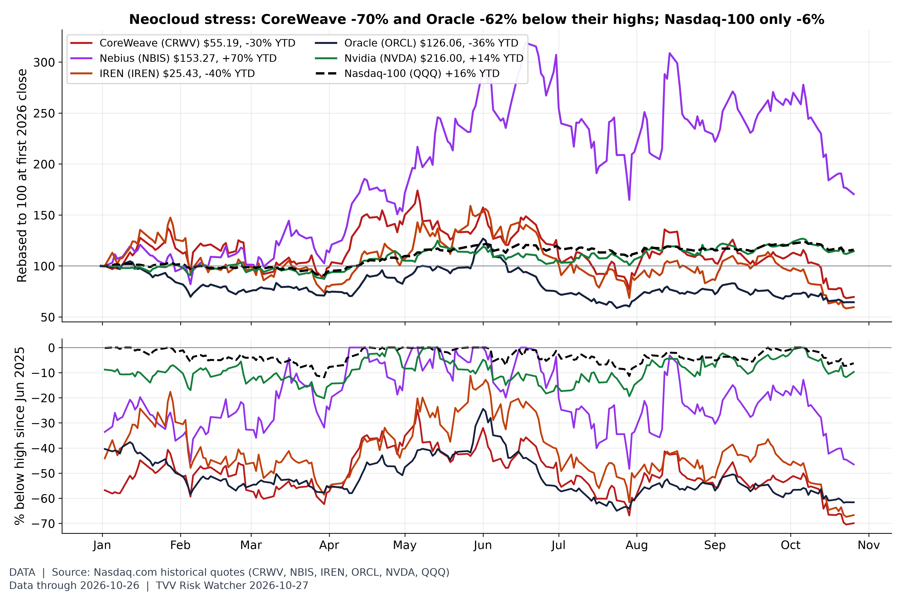
Neocloud stocks vs the index. Closes Mon Oct 26: CoreWeave $55.19, -70% below its Jun 20, 2025 high of $183.58; Oracle $126.06, -62% below $328.33 (Sep 10, 2025); Nebius -47%, IREN -67%, Nvidia -10% off highs (since Jun 2025), vs Nasdaq-100 -6.2%. The most debt-funded AI builders trade furthest below their peaks; CoreWeave's CDS is above 1,000bp per the TVV DC workbook. Microsoft and Alphabet report Oct 28 (FOMC day), Amazon Oct 29; Meta reported Oct 21. [Data; data as of 2026-10-26 (Mon close)] Source: nasdaq.com data page